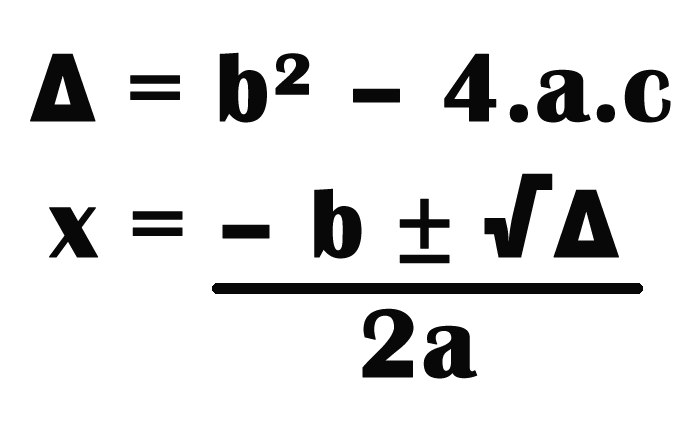
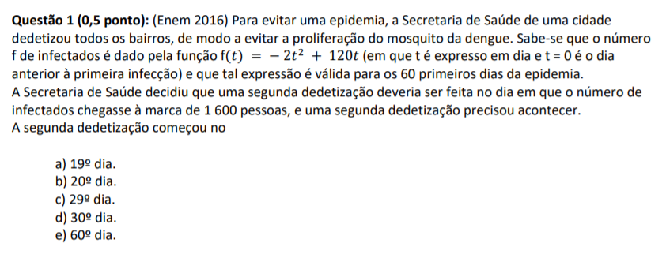

Primeiramente, para entender as funções quadráticas devemos lembrar um pouco das funções do primeiro grau. As funções do primeiro grau apresentam essa característica f(x) = ax + b, o x no expoente 1 indicando que tem apenas uma resposta, outro ponto importante é que essa função forma um gráfico em linha reta.
Voltando para o conteúdo em questão, a função quadrática vai ter essa forma f(x) = ax2 + bx + c. Podemos perceber a diferença logo no início com o "x" elevado ao expoente 2, indicando que teremos 2 respostas para x e que provavelmente usaremos a bhaskara, outra grande diferença é que o gráfico dessa função forma uma parábola. O "b" dessa vez também terá um x junto.
As raízes são muito importantes para a construção dos gráficos, representam o momento que a prábola cruza pelo eixo x ou algebricamente falando é quando o "f(x) = 0". Para descobrir é necessário realizar a fórmula de Bháskara (só trocar o f(x) por 0).
Como já mencionado anteriormente o gráfico da função quadrática forma uma parábola. Para começarmos a pensar na construção dele presisamos nos atentar aos passos.
*O vértice é onde a parábola muda seu crescimento (crescente/decrescente). Para calcular o vétice existem duas formas:
Essa foi a primeira questão do primeiro trabalho sobre o conteúdo de funções quadráticas. Resolvi escolher essa questão, pois foi uma questão que caiu no enem e não foi difícil de resolver:
O conteúdo de funções quadráticas não foi novo para mim, pois já havia estudado no 9o ano, porém esse ano houve um maior aprofundamento . Eu sempre prefiro conteúdos relacionados com funções e equações do que a parte mais de geometria, então realmente gosto desse conteúdo. O que não gosto muito é ter que realizar os gráficos já que muitas vezes não fica bem preciso sem a utilização de uma régua, para isso o software Geogebra é muito útil, mesmo no início sendo um pouco difícil de aprender a usar. No quesito de aprendizagem e aproveitamento, como mencionei anteriormente, esse não foi um conteúdo totalmente novo, então não tiveram grandes dificuldades e diria que o aproveitamento foi muito bom também. É um dos meus conteúdos favoritos de matemática (que estudei até agora), por todos esses motivos que escolhi as funções quadráticas para estarem no meu portfólio.
Ir para o próximo conteúdo ->